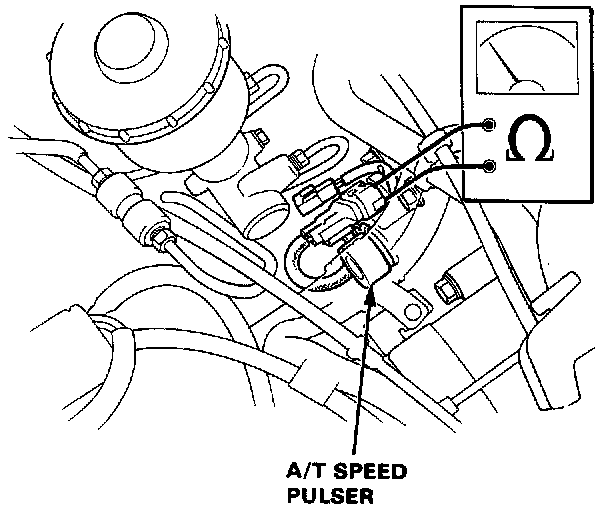

On-Vehicle Test

WARNING:
- Set the parking brake securely and block the rear wheels.
- Make sure jacks and safety stands are placed properly.
A/T Speed Pulser Test
1. Jack up the front of the car and support with safety stands.
2. Disconnect the A/T speed pulser 2P connector.
3. Rotate the front wheels and be sure that continuity and no continuity appear alternately between the two terminals.